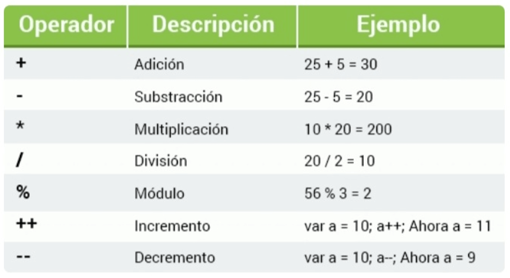
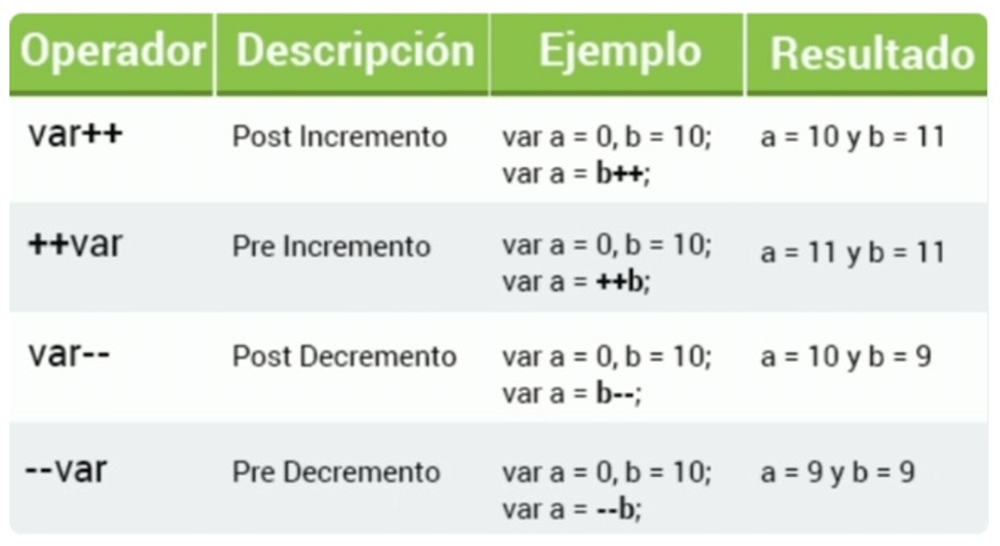
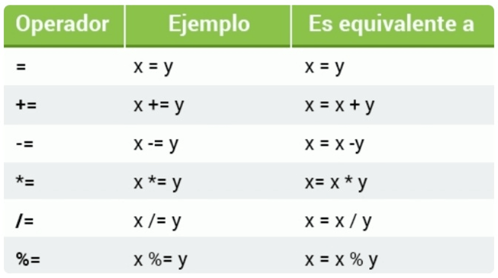
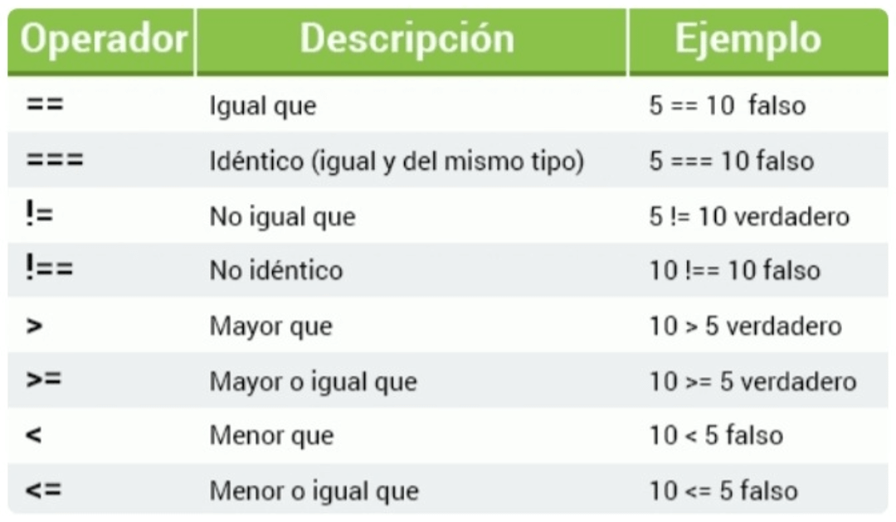
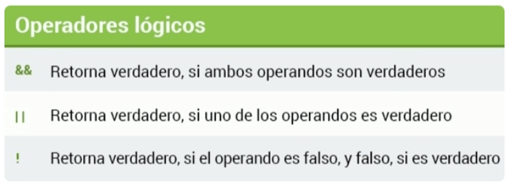
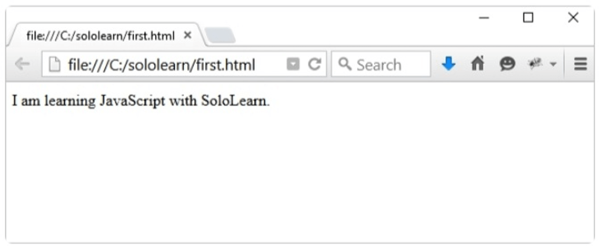

Los operadores aritméticos realizan funciones aritméticas en números (literales o variables).

En el siguiente ejemplo, el operador de adición es usado para determinar la suma de dos números.
var x = 10 + 5;
document.write(x);
Puedes añadir tantos números o variables juntas como quieras o sea necesario.
var x = 10;
var y = x + 5 + 22 + 45 + 6548;
document.write(y);
Puedes obtener el resultado de la expresión de un string utilizando la función eval(), la cual toma el argumento de una expresión de un string como eval("10 * 20 + 8") y devuelve el resultado. Si el argumento está vacío, la función devuelve undefined.
Multiplicación
El operador de multiplicación (*) multiplica un número por otro.
var x = 10 * 5;
document.write(x);
10 * '5' o '10' * '5' da el mismo resultado. Multiplicar un número con valores de string como 'sololearn' * 5 devuelve NaN (Not a Number - no es un número).
Code Coach
Operadores matemáticos
División
El operador / es utilizado para realizar operaciones de división:
var x = 100 / 5;
document.write(x);
Recuerda gestionar los casos donde pueda haber una división entre 0.
El módulo
El operador módulo (%) retorna el resto de la división (lo que sobra).
var myVariable = 26 % 6;
En JavaScript, el operador módulo es utilizado no sólo en enteros, sino también en números de punto flotante.
Incremento y decrementos
Incremento ++
El operador de incremento, aumenta el valor numérico de su operando en uno. Si se coloca antes del operando, retorna el valor incrementado. Si se coloca después del operando, retorna el valor original y luego incrementa el operando.
Decremento --
El operador de decremento, disminuye el valor numérico de su operando en uno. Si se coloca antes del operando, retorna el valor decrementado. Si se coloca después del operando, retorna el valor original y luego decrementa el operando.
Algunos ejemplos:

Al igual que en matemáticas de escuela, puedes cambiar el orden de las operaciones aritméticas usando paréntesis. Ejemplo: var x = (100 + 50) * 3;
Operadores de asignación
Operadores de asignación
Los operadores de asignación asignan valores a variables de JavaScript.

Puedes utilizar múltiples operadores de asignación en una línea, como x - = y + = 9.
Operadores de comparación
Operadores de comparación
Los operadores de comparación son utilizados en declaraciones lógicas para determinar la igualdad o diferencia entre variables o valores. Estos retornan verdadero o falso.
El operador igual que (==) valida si los valores de los operandos son iguales.
var num = 18;
// num == 8 retornará false (falso)
Puedes comprobar todo tipo de datos; los operadores de comparación siempre devuelven true o false (verdadero o falso).
Operadores de comparación
La siguiente tabla explica los operadores de comparación.

Cuando uses operadores, asegúrate de que los argumentos sean del mismo tipo de datos; los números deberían ser comparados con números, las cadenas de texto, con cadenas de texto, y así sucesivamente.
Code Coach
Operadores de comparación 2
Operadores lógicos o booleanos
Operadores lógicos
Operadores lógicos, también conocidos como operadores booleanos, evalúan la expresión y retornan verdadero o falso.
La tabla a continuación explica los operadores lógicos (Y, O, NO).

Puedes comprobar todo tipo de datos; los operadores de comparación siempre devuelven true o false (verdadero o falso).
Operadores lógicos
En el siguiente ejemplo, hemos conectado dos expresiones booleanas con el operador Y.
(4 > 2) && (10 < 15)
Para que esta expresión sea verdadera, ambas condiciones deben ser verdaderas.
La primera condición determina si 4 es mayor que 2, lo cual es verdadero.
La segunda condición determina si 10 es menor que 15, lo cual también es verdadero.
Basados en estos resultados, la expresión completa es evaluada como verdadera.
Operador condicional (ternario)
Hay otro operador condicional en JavaScript que asigna un valor a una variable, basado en una condición.
Si la variable edad tiene un valor por debajo de 18, el valor de la variable esAdulto será "Demasiado joven". De lo contrario, el valor de esAdulto será "Lo suficientemente mayor".
Code Coach
Operadores lógicos o booleanos
Los operadores lógicos permiten conectar tantas expresiones como desees.
Operadores de cadenas de texto
Operadores de cadenas de texto
El operador para cadenas de texto más útil es concatenación, representado por el signo +. Concatenación puede ser usado para construir cadenas de texto juntando múltiples cadenas de texto, o juntando cadenas de texto con otros tipos:
var mystring1 = "I am learning";
var mystring2 = "JavaScript with Sololearn.";
document.write(mystring1 + mystring2);
El ejemplo anterior declara e inicializa dos variables de cadena de texto, y luego las concatena.

Los números entre comillas son tratados como cadenas de texto: "42" no es el número 42, es una cadena de texto que incluye dos caracteres, 4 y 2.